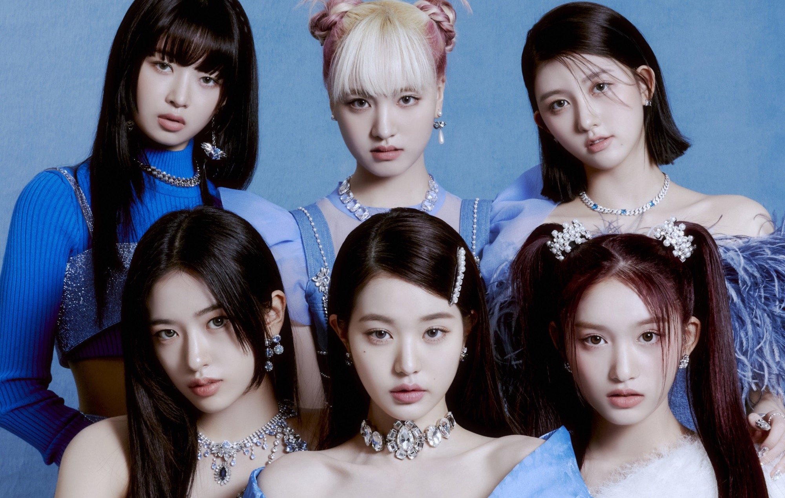
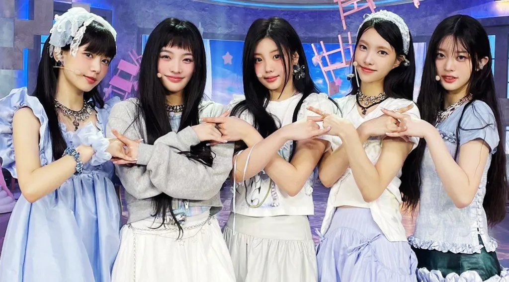
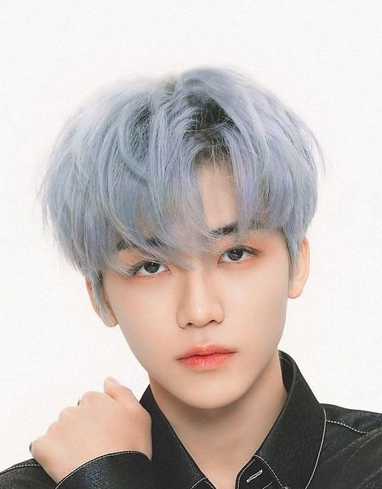
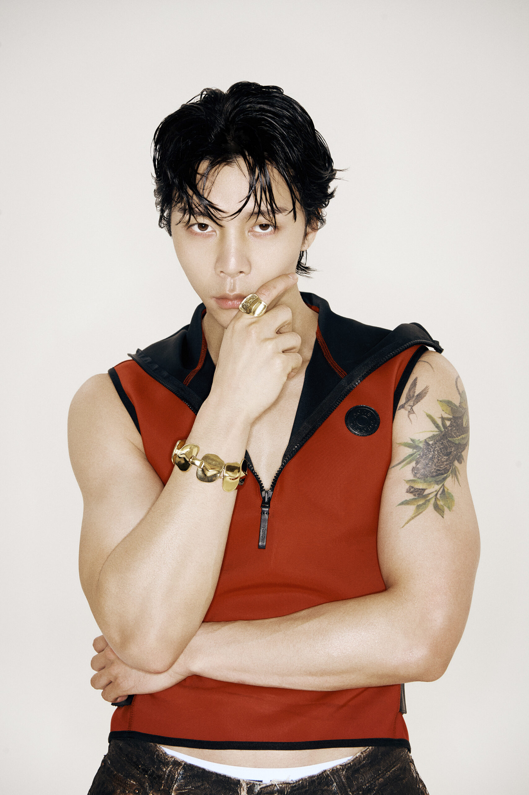
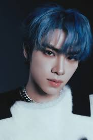
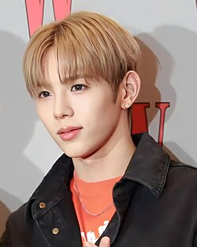

About Me
I have been a K-Pop fan since October 2019, so I have been a fan for about 6 years! I made this blog because not only do I want to share my love for K-Pop, but I want to make a place where K-Pop fans come together as a community to interact and share. I hope my blog can be a place where K-Pop fans can come together and share their love for K-Pop, and I hope to make this blog a fun and enjoyable place for everyone!
For email inquiries, please email me at atdang5@asu.edu
Favorite Groups/Artists


IVE
ILLITFavorite Music Genres
- K-Pop (Of course)
- EDM
- J-Pop
My Biases from my Ult Groups

Jaemin (NCT DREAM)
Johnny Suh (NCT 127)
Xiaojun (WayV)
Shotaro (RIIZE/Former NCT)Note: I have yet to pick a bias from NCT WISH